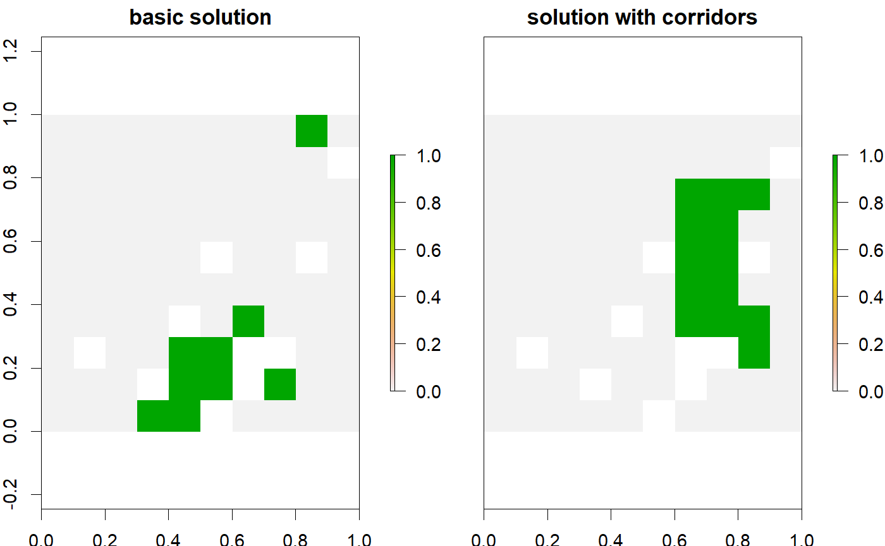

It is important to maintain connectivity throughout a reserve network. However, some areas are more difficult for species to traverse then other areas. As a consequence, even though a reserve may protect a contiguous section of land, some species may not be able to disperse throughout the network if some of the land is a high barrier to dispersal. This function adds constraints to ensure that all planning units used to represent features in the conservation problem are connected by planning units that have high connectivity.
add_corridor_constraints(x, connectivities, thresholds, ...)
| x |
|
|---|---|
| connectivities |
|
| thresholds |
|
| ... | additional arguments passed to |
ConservationProblem-class object.
This function adds constraints to a conservation planning problem to ensure that all planning units used to represent a given feature are connected to each other. To achieve this, each planning unit is associated with conductance values that describe the ease at which individuals from each feature can disperse through it. Higher conductance values indicate that individuals can move planning units with greater ease. The connectivity between two planning units is calculated as the average conductance of the two planning units. After the connectivity values have been calculated, the threshold is applied to determine which planning units are "connected enough" to be used for linking planning units occupied by conspecifics. Adding these constraints to a problem will dramatically increase the amount of time required to solve it.
The argument to y can be used to specify the
the connectivity between different planning units in several different
ways:
character vectorIf the planning units in
argument to x inherit from a Spatial-class
object then the argument to codey can refer to the
names of the columns in the attribute table that contain the
conductance values for each planning unit for each feature.
It is assumed that the order of the column names in argument to
y matches the order of the features in the
argument to x.
RasterStack-class objectEach band
corresponds
to each feature in the argument to x. The cells in each band
denote the conductance of an area. For a given feature, the
conductance of each planning unit is calculated by overlaying the
planning units in argument to codex with the raster data in
argument to conductance. Note that
if the planning units in argument to x inherit from a
Raster-class object, then the argument to
codeconductance must have the same spatial properties as the
planning units (i.e. coordinate system, extent, resolution).
list of dsCMatrix-class matricesEach element in the list corresponds to a different feature. Each row and column refers to a different planning unit, and the cell values denote the connectivity between the two planning units. Note that the connectivity between planning units is assumed to be symmetric.
# load data data(sim_pu_raster, sim_features) # create a basic problem p1 <- problem(sim_pu_raster, sim_features) %>% add_min_set_objective() %>% add_relative_targets(0.1) # create problem with added corridor constraints to ensure that # planning units used to represent features are connected by # planning units with habitat that is suitable for that feature p2 <- p1 %>% add_corridor_constraints(sim_features, 0.5)# solve problems s <- stack(solve(p1), solve(p2))#> Optimize a model with 5 rows, 90 columns and 450 nonzeros #> Variable types: 0 continuous, 90 integer (90 binary) #> Coefficient statistics: #> Matrix range [2e-01, 9e-01] #> Objective range [2e+02, 2e+02] #> Bounds range [1e+00, 1e+00] #> RHS range [3e+00, 7e+00] #> Found heuristic solution: objective 2145.27 #> Presolve time: 0.00s #> Presolved: 5 rows, 90 columns, 450 nonzeros #> Variable types: 0 continuous, 90 integer (90 binary) #> Presolved: 5 rows, 90 columns, 450 nonzeros #> #> #> Root relaxation: objective 1.726522e+03, 11 iterations, 0.00 seconds #> #> Nodes | Current Node | Objective Bounds | Work #> Expl Unexpl | Obj Depth IntInf | Incumbent BestBd Gap | It/Node Time #> #> 0 0 1726.52215 0 4 2145.26789 1726.52215 19.5% - 0s #> H 0 0 1792.7738341 1726.52215 3.70% - 0s #> #> Explored 1 nodes (11 simplex iterations) in 0.00 seconds #> Thread count was 1 (of 16 available processors) #> #> Solution count 2: 1792.77 2145.27 #> #> Optimal solution found (tolerance 1.00e-01) #> Best objective 1.792773834063e+03, best bound 1.726522151579e+03, gap 3.6955% #> Optimize a model with 1172 rows, 982 columns and 3838 nonzeros #> Variable types: 0 continuous, 982 integer (982 binary) #> Coefficient statistics: #> Matrix range [2e-01, 1e+00] #> Objective range [2e+02, 2e+02] #> Bounds range [1e+00, 1e+00] #> RHS range [1e+00, 7e+00] #> Presolve time: 0.01s #> Presolved: 1172 rows, 982 columns, 3838 nonzeros #> Variable types: 0 continuous, 982 integer (982 binary) #> Presolved: 1172 rows, 982 columns, 3838 nonzeros #> #> #> Root relaxation: objective 2.048985e+03, 1544 iterations, 0.03 seconds #> #> Nodes | Current Node | Objective Bounds | Work #> Expl Unexpl | Obj Depth IntInf | Incumbent BestBd Gap | It/Node Time #> #> 0 0 2048.98539 0 347 - 2048.98539 - - 0s #> 0 0 2106.67934 0 486 - 2106.67934 - - 0s #> 0 0 2120.75038 0 582 - 2120.75038 - - 0s #> 0 0 2121.06736 0 580 - 2121.06736 - - 0s #> 0 0 2133.71685 0 524 - 2133.71685 - - 0s #> 0 0 2134.82223 0 544 - 2134.82223 - - 0s #> 0 0 2134.82223 0 544 - 2134.82223 - - 0s #> 0 0 2135.72473 0 560 - 2135.72473 - - 0s #> 0 0 2135.74466 0 561 - 2135.74466 - - 0s #> 0 0 2140.21068 0 550 - 2140.21068 - - 0s #> 0 0 2140.22212 0 544 - 2140.22212 - - 0s #> 0 0 2140.22212 0 540 - 2140.22212 - - 0s #> 0 0 2140.22212 0 540 - 2140.22212 - - 0s #> H 0 0 7541.8548642 2140.22212 71.6% - 0s #> H 0 0 7121.8058283 2140.22212 69.9% - 0s #> H 0 0 6943.8612201 2140.22212 69.2% - 0s #> 0 2 2140.29904 0 540 6943.86122 2140.29904 69.2% - 0s #> * 113 87 45 3930.7462461 2151.55546 45.3% 96.7 1s #> H 127 33 2718.9993044 2153.02972 20.8% 102 1s #> H 165 56 2702.9438651 2163.93703 19.9% 99.5 1s #> H 230 76 2700.4603762 2198.78269 18.6% 95.9 1s #> H 521 185 2687.1618461 2320.41911 13.6% 86.2 4s #> 528 189 2329.76487 12 510 2687.16185 2320.41911 13.6% 85.1 5s #> H 528 179 2682.5964008 2320.41911 13.5% 85.1 5s #> H 610 184 2680.8577398 2320.41911 13.4% 105 6s #> #> Cutting planes: #> Gomory: 12 #> Cover: 1 #> MIR: 2 #> Zero half: 5 #> #> Explored 1576 nodes (120859 simplex iterations) in 8.90 seconds #> Thread count was 1 (of 16 available processors) #> #> Solution count 10: 2680.86 2682.6 2687.16 ... 7541.85 #> #> Optimal solution found (tolerance 1.00e-01) #> Best objective 2.680857739841e+03, best bound 2.414072455086e+03, gap 9.9515%# plot solutions plot(s, main = c("basic solution", "solution with corridors"))